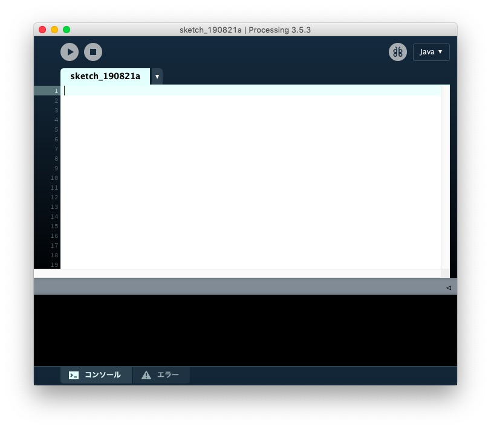
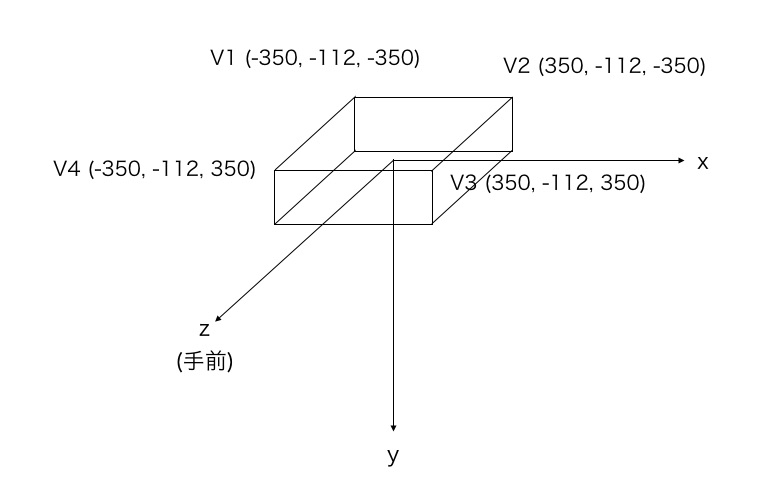
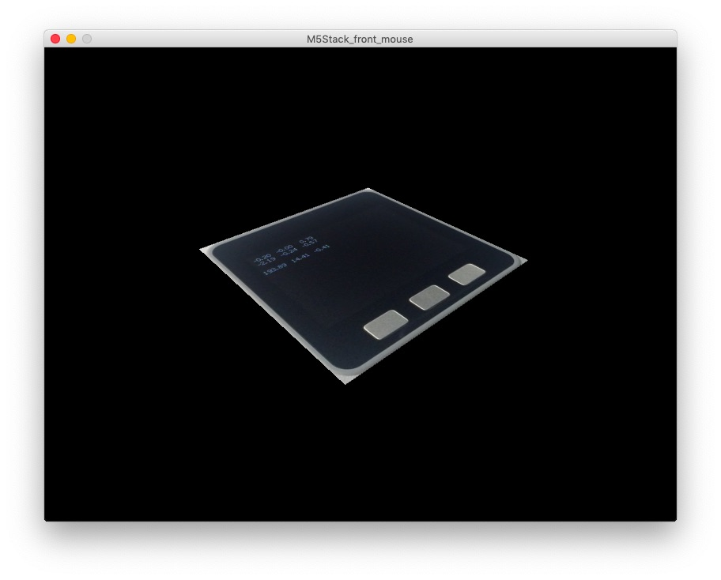
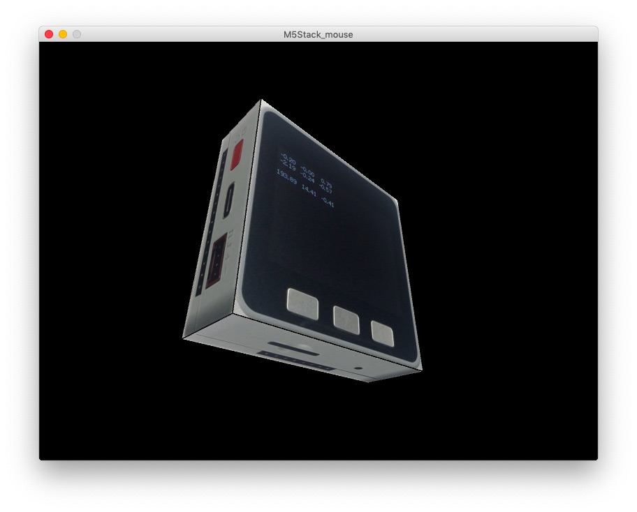
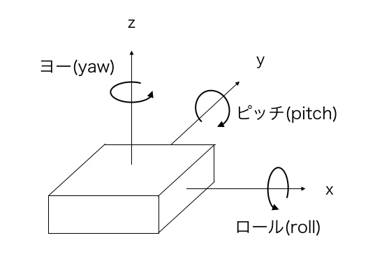
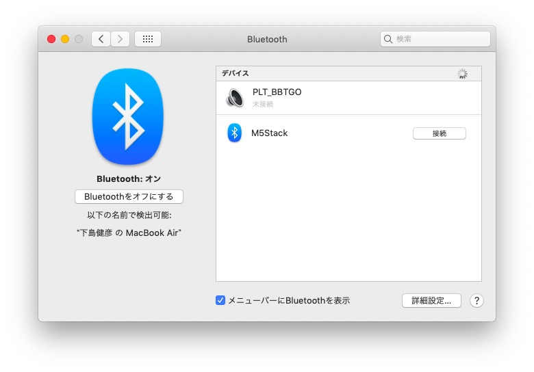

M5Stack GrayやFireには9軸加速度・ジャイロ・磁気センサ（IMU）が、M5StickCには6軸加速度・ジャイロが搭載されています。 今回はこのIMUを使って端末の姿勢を計算します。 さらに姿勢データをパソコンに送り、パソコン上に作ったM5Stackの3Dモデルを、実際のM5Stackの動きに合わせて動かしてみます。
まずは動画をご覧ください。
開発は次のステップで進めます。
なお、M5Stack GrayやFireのIMUチップは出荷時期によってMPU9250が搭載されているものと、MPU6886が搭載されているものがあります。 著者の手元にはMPU9250搭載のものがあるので、この記事はMPU9250版で書いています。 搭載されているIMUチップは、M5Stackで次のプログラムを動かすと調べられます。
3Dモデルを作れるツールはいろいろありますが、センサデータを使ってモデルをグルグル回転させられる使いやすいツールということで、 今回はProcessing（https://processing.org/）を使うことにします。
Processingは線や図形、画像などが簡単に扱えるプログラミング言語と統合開発環境です。
ProcessingはWindows、Mac OS X、Linuxで動作します。 Processing公式サイトのDownload Processingページ（https://processing.org/download/）から、お使いのOSに合わせたソフトウェアのZIPファイルをダウンロードします。Mac OSの場合、ダウンロードしたZIPファイルを展開し、出てきたアプリケーションファイルをアプリケーションフォルダーに入れればインストール完了です。
アプリケーションを起動すると、次のような画面が現れます。

どこかで見たような画面ですね。画面が上下に分割されていて、上の方には実行ボタンのようなものがあり、タブには「sketch_190821a」と書かれています。そう、Arduino IDEにとてもよく似ています。WikipediaによるとProcessingは2001年に開発がスタートし、Arduinoにも大きな影響を与えているそうです。
プログラムの構造もArduinoとよく似ていて、setupという関数があると最初に一度だけ実行され、その後drawというArduinoのloop関数にあたる関数が繰り返し実行されます。setup関数で描画する画面サイズの設定などの初期設定をおこない、draw関数で線や図形などを実際に描画します。draw関数は繰り返し実行されるので、実行のたびに線や図形の位置や大きさなどを変えると動画を表示することも可能です。
まずM5Stackの3Dモデルを作ります。Processingでは、Shapes 3Dというライブラリを使うと、いろいろな形の3Dの物体にテクスチャを貼り付けることができます。しかし、Shapes 3Dは仕様に不明なところがあるので、もっと単純にM5Stackの前後、左右、上下、6枚の画像を3次元空間に貼り付けることにします。
まず最初に、M5Stackの前後、左右、上下、6面から写真を撮ります。撮った写真を調べると前後の写真は700 x 700ピクセル前後、上下左右の写真は700 x 225ピクセル前後だったので、M5Stackを表す直方体の大きさを700 x 700 x 225ピクセルに決めました。次に、前後の写真は700 x 700、上下左右の写真は700 x 225ピクセルぴったりになるように画像ソフト（Macであればプレビューなど）を使って画像サイズを調整しておきます。
次に、ProcessingでM5Stackのモデルを作ります。M5Stackを表す直方体を考えます。直方体の大きさはM5Stackの縦横高さと同じ比率にしますが、分かりやすいように写真のピクセル数に合わせて700 x 700 x 225にしました。

この直方体の中心が3次元空間の原点にくるように置くと、M5Stackの前面の座標は左上からコの字の順番に次のようになります。
V1: (-350, -112, -350)
V2: ( 350, -112, -350)
V3: ( 350, -112, 350)
V4: (-350, -112, 350)
この座標にM5Stackの前面の画像を貼り付け、マウスで動かしてみます。
Processingを立ち上げて、次のプログラムを入力し、適当な名前、例えばM5Stack_front_mouseで保存します。
プログラムを保存したフォルダの場所をProcessingの「環境設定」で確認します。Macの場合、標準では「/Users/ユーザー名/Documents/Processing/スケッチ名」です。このフォルダにdataというフォルダを作り、dataの中にM5Stack前面の画像ファイルをfront.jpgという名前で置きます。
Processingの「実行」ボタンを押すと、画像ウィンドウが現れ、中にM5Stack前面の画像が表示されます。マウスを動かすと、それに合わせてM5Stack前面の画像が動くのが確認できます。

前面の画像だけなので、角度によっては裏側が見えてしまうなど、変なところもありますが、画像を3次元空間において、マウスで回転させられました。他の5面についても同様に3D空間に貼り付けることで、M5Stackの3Dモデルを作り、マウスで動かせるようになります。
3Dモデルを作ってマウスで動かすプログラムは下記をご覧ください。
https://gist.github.com/TakehikoShimojima/f5b58a5bf7f5545fa27ae32d0d09e1a0
プログラムを保存したフォルダにdataというフォルダを作り、今度は6面の画像ファイルをfront.jpg、back.jpg、right.jpg、left.jpg、top.jpg、bottom.jpgという名前で置きます。
プログラムを動かすと、次のような画像が表示され、マウスの動きに合わせて動くのが確認できます。

ProcessingでM5Stackの3Dモデルができたので、次はM5StackのIMUを使って、M5Stack自身の姿勢を計算します。
物体の姿勢を表すには、次の図のようにx軸を中心とした回転角度ロール（roll）、y軸を中心としたピッチ（pitch）、z軸を中心としたヨー（yaw）を使います。

ちなみに、この図のx軸、y軸、z軸の向きは右手系といって、右手の親指、人差し指、中指を互いに直交するように開いたとき、親指がx軸、人差し指がy軸、中指がz軸に対応します。M5Stackに内蔵されるIMU（MPU9520）のx軸、y軸、z軸の向きも同じように右手系です。
9軸加速度・ジャイロ・磁気センサや6軸加速度・ジャイロセンサの値から、ロール、ピッチ、ヨーを計算するMadgwickAHRSというライブラリがあります。AHRSはAttitude and Heading Reference Systemの略で、姿勢と方位を計算するシステムです。Madgwickという人が開発した、IMU値から姿勢と方位を計算するアルゴリズムを使っています。磁気センサの値を使わなくても十分な精度の姿勢データが得られたので、加速度・ジャイロセンサの値だけを使うことにします。
M5StackでMPU9250から加速度とジャイロの値を取得するArduinoのプログラムは次のようになります。
#include "utility/MPU9250.h"
MPU9250 IMU;
void setup() {
IMU.initMPU9250(); // MPU9250を初期化する
IMU.calibrateMPU9250(IMU.gyroBias, IMU.accelBias); // キャリブレートする
}
void loop() {
while (!(IMU.readByte(MPU9250_ADDRESS, INT_STATUS) & 0x01)) ;
IMU.readAccelData(IMU.accelCount); // 加速度の生データーを取得する
IMU.getAres(); // スケール値を取得する
// x/y/z軸の加速度値を計算する
IMU.ax = (float)IMU.accelCount[0] * IMU.aRes - IMU.accelBias[0];
IMU.ay = (float)IMU.accelCount[1] * IMU.aRes - IMU.accelBias[1];
IMU.az = (float)IMU.accelCount[2] * IMU.aRes - IMU.accelBias[2];
IMU.readGyroData(IMU.gyroCount); // ジャイロの生データーを取得する
IMU.getGres(); // スケール値を取得する
// x/y/z軸のジャイロ値を計算する
IMU.gx = (float)IMU.gyroCount[0] * IMU.gRes;
IMU.gy = (float)IMU.gyroCount[1] * IMU.gRes;
IMU.gz = (float)IMU.gyroCount[2] * IMU.gRes;
}
MPU9250のオブジェクト（IMU）を作り、setup関数の中で初期設定とキャリブレートをします。加速度データを取得するには、readAccelDataで生データを、getAresでスケール値を取得し、生データにスケール値を掛けて加速度値を計算します。ジャイロ値も同様です。
加速度値とジャイロ値から姿勢を計算するのは次のようにします。
#include <MadgwickAHRS.h>
Madgwick filter; // 姿勢を計算するオブジェクトを作る
void setup() {
filter.begin(10); // 10Hz filterを初期化する
}
void loop() {
filter.updateIMU(IMU.gx, IMU.gy, IMU.gz, IMU.ax, IMU.ay, IMU.az);
float roll = filter.getRoll();
float pitch = filter.getPitch();
float yaw = filter.getYaw();
}
姿勢を計算するMadgwickフィルタのオブジェクト（filter）を作り、setup関数で初期設定します。パラメータにはfilterを更新する周期をHz単位で渡します。
loop関数で加速度値とジャイロ値を渡してfilterを更新（updateIMU）すると、getRoll、getPitch、getYaw関数でロール、ピッチ、ヨー値が取得できます。updateIMUを呼ぶ頻度は、初期設定で指定した周期に合わせます。
MPU9250から加速度、ジャイロデータを取得し、姿勢を計算してデータをシリアルに出力するプログラム（mpu9250_serial.ino）は次のようになります。
実際に動かしたところ、ロール、ピッチ、ヨーの値がふらついたので、区間5の移動平均を取って、値を平準化しています。
M5Stackで姿勢を計算してシリアルに送れるようになったので、データをパソコン上のProcessingで受信して、最初に作ったM5Stackの3Dモデルを動かしてみます。
Processingでシリアルからのデータ取得は、次のようにします。
import processing.serial.*;
Serial port;
void setup() {
String[] ports = Serial.list();
for (int i = 0; i < ports.length; i++) {
println(i + ": " + ports[i]);
}
port = new Serial(this, ports[1], 115200);
}
void draw() {
if (port.available() == 0) return; // 回線にデーターがなければリターン
String str = port.readStringUntil('\n'); // 1行読み込み
if (str == null) return; // データーが空行ならリターン
String toks[] = split(trim(str), ","); // カンマ（,）で区切られたトークンを取得
if (toks.length != 3) return; // トークンが3でなければリターン
float roll = float(toks[0]); // トークン0をfloat数に変換
float pitch = -float(toks[1]); // トークン1をfloat数に変換
float yaw = 180 - float(toks[2]); // トークン2をfloat数に変換
}
シリアルモジュールをインポートし、setup関数の中で、使用可能なシリアル回線のリストを出力しています。次のような結果がProcessing IDEのメッセージエリアに表示されます。
0: /dev/cu.Bluetooth-Incoming-Port
1: /dev/cu.SLAB_USBtoUART
2: /dev/tty.Bluetooth-Incoming-Port
3: /dev/tty.SLAB_USBtoUART
1番（/dev/cu.SLAB_USBtoUART）がM5StackとパソコンをつないでいるUSBシリアル回線なので、そのデバイスをオープンします。使用可能なシリアル回線はパソコンによって異なりますので、環境に合わせて回線の番号は変更してください。
文字データの読み込みは、available関数でデータがあることを確認し、データがあれば、readStringUntil(’\n’)関数で改行文字まで1行分のデータを読み込みます。
trim関数で空白文字を取り除き、split関数でカンマで区切られたトークンを取り出しています。
float関数で文字列をfloatデータに変換します。M5Stack上のx軸、y軸、z軸の向きとProcessingでの向きを合わせるために、pitchとyawの値は符号を反転させたり、180度反転させたりしています。
roll、pitch、yawデータを元にProcessingのデータを回転するロジックはArduinoの「Arduino/Genuino 101 CurieIMU Orientation Visualiser」というチュートリアルを参考にしました。
Processingのスケッチ全体は次のようになります。
M5Stackを水平なところにおいて、先程のmpu9250_serial.inoを起動し、次いでProcessing側を動かすと、パソコンの画面にM5Stackの3Dモデルが現れ、実際のM5Stackの動きに合わせて3Dモデルが動くのが確認できます。
ここまではM5StackとパソコンをUSBケーブルでつないで姿勢データを送っています。M5StackにはBluetoothモジュールが搭載されているので、次はBluetoothで姿勢データを送ります。
BluetoothにはSPP（Serial Port Profile）といって、Bluetoothを使って仮想のシリアルポートを作って通信をする規格があります。ArduinoではBluetoothSerialというライブラリを使うとBluetoothでのシリアル通信ができます。
#include "BluetoothSerial.h"
BluetoothSerial SerialBT;
void setup() {
SerialBT.begin("M5Stack"); //Bluetoothデバイス名
}
BluetoothSerialの使い方は、最初にBluetoothSerial.hヘッダファイルをインクルードし、BluetoothSerialのオブジェクトを作ります。setup関数の中でSerialBTのbegin関数で初期設定をおこないます。パラメータにはデバイス名を渡します。
初期設定ができたら、あとは有線のSerialと同じようにprintやprintln、printfといった関数で文字の出力ができます。
先程のMPU9250から加速度、ジャイロデータを取得し、姿勢を計算してデータをシリアルに出力するプログラム（mpu9250_serial.ino）に、BluetoothSerialへの出力を追加したプログラム（mpu9250_bt.ino）は下記をご覧ください。
https://gist.github.com/TakehikoShimojima/e6792a05562d894f6477c8e8da797f6d
このプログラムをビルドして、M5Stackで動かします。次に、パソコン側でM5Stackとペアリングします。Macの場合、システム環境設定のBluetoothを選択すると、次のようにSerialBT.beginで指定した名前のBluetoothデバイスが表示されるので、「接続」ボタンをクリックします。すると「M5Stack」の状態が「接続済み」に変わります。しばらくすると状態が「未接続」に変わりますが、問題ありません。

この状態でProcessingのM5Stack_serial.pdeを動かすと、使用可能なシリアル回線が次のように変化します。
0: /dev/cu.Bluetooth-Incoming-Port
1: /dev/cu.M5Stack-ESP32SPP
2: /dev/cu.SLAB_USBtoUART
3: /dev/tty.Bluetooth-Incoming-Port
4: /dev/tty.M5Stack-ESP32SPP
5: /dev/tty.SLAB_USBtoUART
この例では1番に/dev/cu.M5Stack-ESP32SPPというデバイスが表示されていて、これがBluetoothSerialの回線ですので、この回線をオープンします。すると、最初に掲載した動画のように実際のM5Stackの動きに合わせてパソコン上の3Dモデルが動くのが確認できます。
パソコン側はBluetoothでM5Stackとペアリングする操作はシステム環境設定でやってしまうので、Processingは有線のシリアル回線からデータを受信するものと全く同じスケッチでBluetoothからデータを受信できます。
今回は、Processingを使ってM5Stackの3Dモデルを作り、それをM5Stackを使ってグルグル動かしてみました。Processingは簡単に画像が扱えるツールなので、いろいろと応用ができそうです。